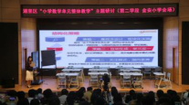

“连续剧”式的小学数学课亮屏金安——海淀区“小学数学单元整体教学”主题研讨掠影
2020年10月20日，海淀区“小学数学单元整体教学”主题研讨第二学段的活动就在美丽的金安小学开展，海淀区的小学数学同仁们再一次相聚在金安。这次研讨活动得到了海淀区教师进修学校大力支持，更欣喜地迎来了进修学校小幼室林传忠主任、金安小学林华强校长以及江西赣州的跟岗校长。
精心在课堂
第一节课是由兰诗洁老师带来的《平行四边形的面积》，经单元整体结构化之后，本来一课时的内容被分成了两部分——数方格和割补法。这一节主要是通过探索割补法，学习转化思想在图形中应用。整个过程环环相扣，紧密相连，结论的得出也是水到渠成，一步步地追问，“逼”着学生往下走，往深想。尤其是回顾与总结，从图文到语言，多种方式巩固学生对过程与方法的反思，为下一节课，方法的运用做了充足准备。

第二节课是由谢伟祥老师带来的《三角形、梯形的面积》。经单元整体结构化之后，与《平行四边形面积》寻找共同点，本来两课时的新内容放在了一课时。谢老师从兰老师的小结入手，与学生在一步步的实验与探索中，完成对基本方法的巩固，也有不同的延伸——倍拼法。方法的迁移与运用更是让这一方法从得以圆满，尤其是结尾对圆的面积的探索方法猜想，给未来学习留下了伏笔，让结构化可以走得更远。
课后，金安数学组的教研组长——苏玲老师代表数学教研组做了主题为《整而合之 合而不同》的备课思考分享。苏老师从反思困惑、理论学习、实践探索几个方面分享了这两节课的整合思路与方法。分享不仅立足这一个单元，还关注了这个单元在小学数学中的位置，与前后知识的联系，明确了“结构”不是简单拆合，而是为了使教学达到“整体大于部分和”的目的。

接着，在邵庆德副校长的组织下，全区的数学老师们分片区、分学校充分交流对两节课的收获与看法，更是在集体交流环节踊跃发言，纷纷表达了对“连续剧”式数学课的惊喜，也提出了关于单元整体教学中自己的思考与心得。
最后，林传忠主任对上午的活动做了总结。他充分肯定今天两节研讨课的质量，点赞金安的数学团队，提出以能力为导向，整体备课为策略，先慢后快、变速教学为思路，鼓励老师们努力寻找数学知识与方法的“前生”与“后世”，依托备课组层级推进，积极实践研讨，把数学课上成引人入胜的“连续剧”。林主任还对各位老师提出了研究课堂、研究教材、研究教法，积极撰写论文、做课题的殷切希望。
尽心做准备
从期初教研接到任务开始，金安数学组就马上教研，但面对一个新的主题研讨，虽然有一把子力气，也感觉无从下手。怎么整体？如何结构？一个个问题摆在老师们面前。不会？没关系，我们可以问！
专家指引
从主题学习，到研读标；从解读课本，到选定单元；从打磨教案，到实战演练，每一个环节都离不开专家的指引。海淀区教师进修学校的小幼室林传忠主任和教研员林丽韫老师一直不厌其烦的指导着金安数学教研组，更是几次来到课堂中跟上课老师一起磨课，一起研讨。
林传忠主任从教材的整体把握入手，指导老师如何在教学环节中落实“猜想为先，探索为主”的教学过程，并希望老师们要给予学生更多的思考总结的时间，才能更有效的助力思维能力的提升。
林丽韫老师从细节方面对两位老师进行了指导。与老师们一起分析“结构化”的要点，细化每节课要完成的要点，引发老师们的思考。林老师还从教师的语言要精准、精炼，动作要与自己的语言协调一致，甚至时间如何掌控等方面给予老师们细致的指导。
同伴助力
金安数学教研组一直是个有凝聚力的集体，这一次，大家仍然一如既往的与两位年轻做研讨，提出自己思考后的想法。尤其是新加入的邵庆德副校长，更是在整个过程中不遗余力的指导，把自己的所思所想倾囊相授，还给予两位老师课前准备的经验小提示。
各备课组也以多种多样的形式助力两位老师：有为微课做材料收集的，有为课堂学具做制作的，有为课件做动画的，有为板书做设计的……
自我完善
兰诗洁和谢伟祥两位年轻教师更是勇于担当，积极准备。第一时间准备了教案与教研组的同事们交流，虚心听取大家的建议，及时修改教案。熟悉教材内容，明确整体目标，细化课堂重点，每一个环节，每一次停顿，每一个问题烂熟于心。一次次打磨，一次次实战，也是一次次的成长啊！
信心向未来
2014.9—2020.7，六年，小学的一次轮回，今年进入第七年，金安已开启一个新的轮回，相信金安数学组在区教师进修校的领导下，在林华强校长的引领下，必将在“六真”课题探索中继续做真教育，争取形成金安独特的数学教育生态。
（金安小学晁晶、陈煌耀供稿）